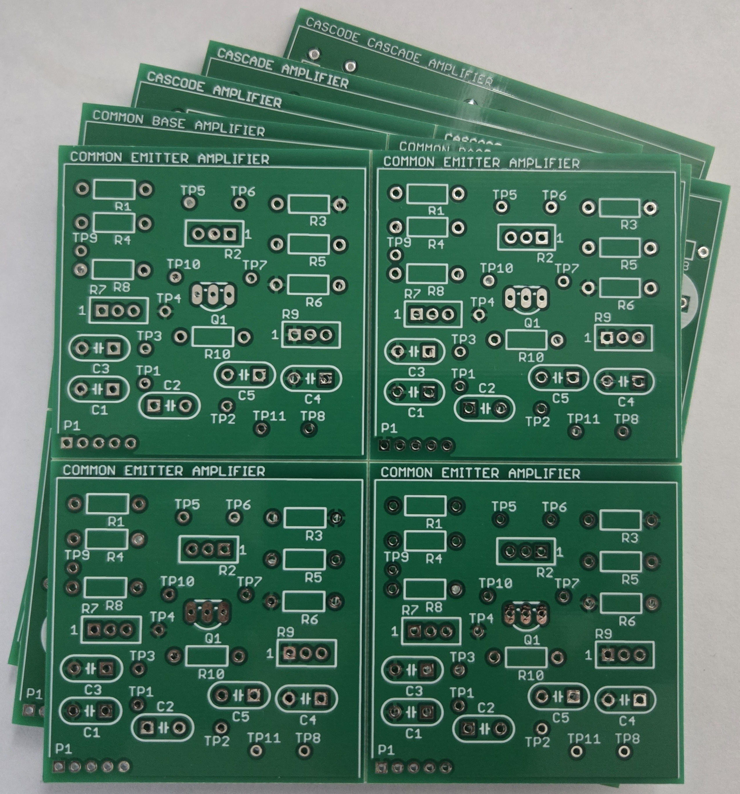

About miniPCB™
miniPCB™ is a growing collection of small circuit boards created to support hands-on learning in electronics education. Each board is designed to help students explore real-world circuits, test ideas, and build confidence in their skills.
Who It's For
miniPCBs are designed for educators. Whether you're teaching introductory electronics or advanced analog design, these boards are made to complement your curriculum, reinforce key concepts, and spark hands-on curiosity in the classroom.
What Makes miniPCBs Unique
- Circuits relevant to lectures and labs
- Board sizes that fit the circuits (sizes that form 100 x 100 mm v-scored panels)
- Standardized interface connectors, pinouts, layouts, and labeling across all designs
- Test points to encourage measurement and exploration
- Available as bare boards (components not included)
The Recipe for a Good miniPCB
A good miniPCB starts with a few practical design choices:
- Easy to manufacture and assemble. The two-layer PCB is designed for easy manufacturing and assembly. Board sizes allow panelization into 100 x 100 mm squares to reduce manufacturing costs.
- Consistent layer use. Signals are routed on the bottom layer, which carries the part number. The top layer provides a common ground plane, kept as continuous as possible.
- Consistent connector placement. The P1 connector sits in a standard position relative to the board edges, making it possible to build a universal tester, backplane, or stand.
How to contact us
Use the contact page to send a message.
